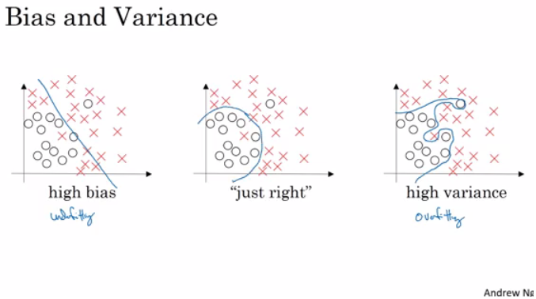
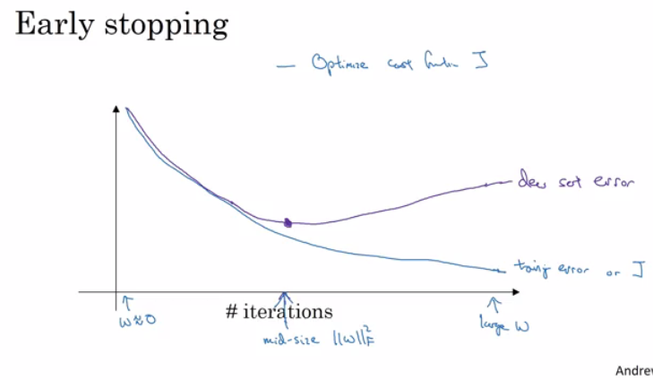
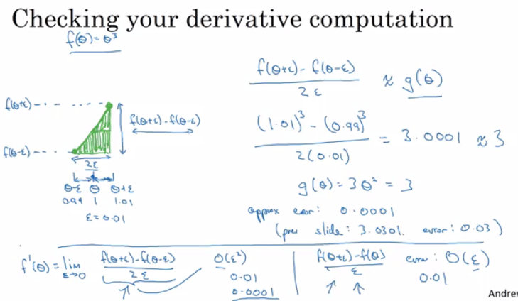
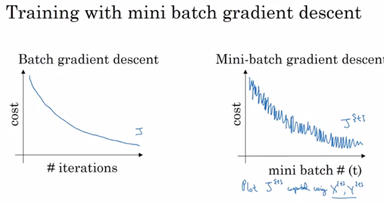
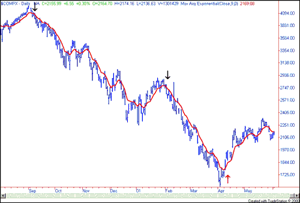
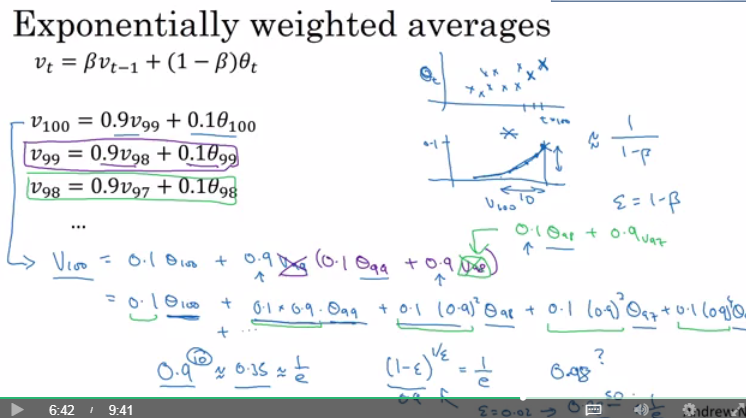
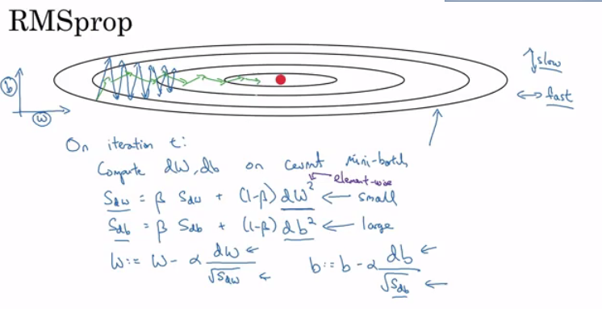
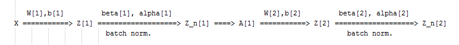
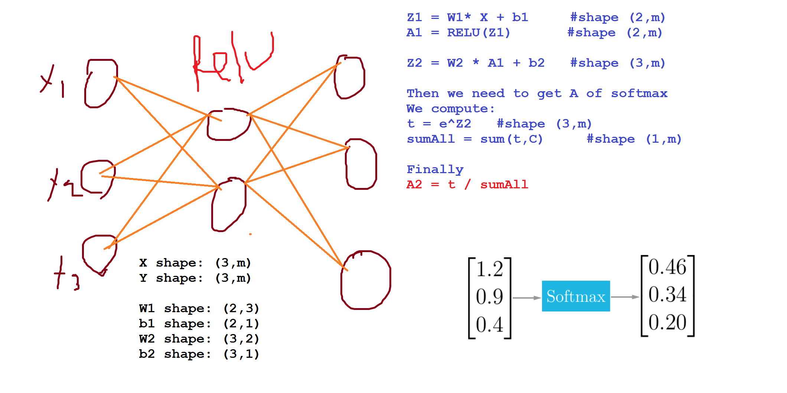

Reference from lecture slides of Andrew Ng and github repo from DeepLearning.ai-Summary
Table of contents
- Improving Deep Neural Networks: Hyperparameter tuning, Regularization and Optimization
- Table of contents
- Course summary
- Practical aspects of Deep Learning
- Train / Dev / Test sets
- Bias / Variance
- Basic Recipe for Machine Learning
- Regularization
- Dropout Regularization
- Understanding Dropout
- Other regularization methods
- Normalizing inputs
- Vanishing / Exploding gradients
- Weight Initialization for Deep Networks
- Numerical approximation of gradients
- Gradient checking implementation notes
- Optimization algorithms
- Mini-batch gradient descent
- Understanding mini-batch gradient descent
- Exponentially weighted averages
- Understanding exponentially weighted averages
- Bias correction in exponentially weighted averages
- Gradient descent with momentum
- RMSprop
- Adam optimization algorithm
- Learning rate decay
- The problem of local optima
- Hyperparameter tuning, Batch Normalization and Programming Frameworks
- Tuning process
- Using an appropriate scale to pick hyperparameters
- Hyperparameters tuning in practice: Pandas vs. Caviar
- Normalizing activations in a network
- Fitting Batch Normalization into a neural network
- Why does Batch normalization work
- Batch normalization at test time
- Softmax Regression
- Training a Softmax classifier
- Deep learning frameworks
- TensorFlow
- Extra Notes
Course summary
Here are the course summary as its given on the course link:
This course will teach you the “magic” of getting deep learning to work well. Rather than the deep learning process being a black box, you will understand what drives performance, and be able to more systematically get good results. You will also learn TensorFlow.
After 3 weeks, you will:
- Understand industry best-practices for building deep learning applications.
- Be able to effectively use the common neural network “tricks”, including initialization, L2 and dropout regularization, Batch normalization, gradient checking,
- Be able to implement and apply a variety of optimization algorithms, such as mini-batch gradient descent, Momentum, RMSprop and Adam, and check for their convergence.
- Understand new best-practices for the deep learning era of how to set up train/dev/test sets and analyze bias/variance
- Be able to implement a neural network in TensorFlow.
This is the second course of the Deep Learning Specialization.
Practical aspects of Deep Learning
Train / Dev / Test sets
- Its impossible to get all your hyperparameters right on a new application from the first time.
- So the idea is you go through the loop:
Idea ==> Code ==> Experiment. - You have to go through the loop many times to figure out your hyperparameters.
- Your data will be split into three parts:
- Training set. (Has to be the largest set)
- Dev set or Validation set.
- Testing set.
- You will try to build a model upon training set then try to optimize hyperparameters on Dev set as much as possible. Then after your model is ready you try and evaluate the testing set.
- so the trend on the ratio of splitting the models:
- If size of the dataset is 100 to 1000000 ==> 60/20/20
- If size of the dataset is 1000000 to INF ==> 98/1/1 or 99.5/0.25/0.25
- The trend now gives the training data the biggest sets.
- Make sure the Training/Dev/test set is coming from the same distribution.
- For example if cat training pictures is from the web and the Dev/test pictures are from users cell phone they will mismatch. It is better to make them one distribution.
- The Dev set rule is to try them on some of the good models you’ve created.
- Its OK to only have a Dev set without a testing set.
- Almost all people call the Dev set as the test set. But a better terminology is to call it a Dev set as its used in the development.
Bias / Variance
- Bias / Variance techniques are Easy to learn, but difficult to master.
- So here the explanation of Bias / Variance:
- If your model is underfitting (logistic regression of non linear data) it has a “high bias”
- If your model is overfitting then it has a “high variance”
- Your model will be alright if you balance the Bias / Variance
- For more:

- Another idea to get the bias / variance if you don’t have a 2D plotting mechanism:
- High variance (overfitting) for example:
- Training error: 1%
- Dev error: 11%
- high Bias (underfitting) for example:
- Training error: 15%
- Dev error: 14%
- high Bias (underfitting) && High variance (overfitting) for example:
- Training error: 15%
- Test error: 30%
- Best:
- Training error: 0.5%
- Test error: 1%
- These Assumptions came from that human has 0% error. If the problem isn’t like that you’ll need to use human error as baseline.
- High variance (overfitting) for example:
Basic Recipe for Machine Learning
- If your algorithm has a high bias:
- Try to make your NN bigger (Size of Hidden units, Number of layers)
- Try a different model that are suitable for your data.
- Try to run it longer.
- Different optimization algorithm.
- If your algorithm has a high variance:
- More data.
- Try regularization.
- Try a different model that are suitable for your data.
- You should try the previous two points until you have a low bias / low variance.
- In the older days before deep learning there was a “Bias / variance trade off”. But because now you have more options on solving the bias and variance problem its really helpful to use deep learning.
- Training a bigger neural network never hurt.
Regularization
- Adding Regularization to NN will help it reduce variance (Overfitting)
- L1 matrix Norm:
||W|| = Sum(|W[i,j]|) # Sum of all Ws with abs
- L2 matrix Norm sometimes its called Frobenius norm:
||W||^2 = Sum(|W[i,j]|^2) #Sum of all Ws squared- Also can be calculated using
||W||^2 = W.T * W
- Regularization For logistic regression:
- The normal cost function that we want to minimize is:
J(w,b) = (1/m) * Sum(L(y(i),y'(i))) - The L2 Regularization version:
J(w,b) = (1/m) * Sum(L(y(i),y'(i))) + (Lmda/2m) * ||W||^2 - The L1 Regularization version:
J(w,b) = (1/m) * Sum(L(y(i),y'(i))) + (Lmda/2m) * (||W||) - The L1 Regularization version makes a lot of w values become zeros, which makes the model size is small.
- L2 Regularization is being used much often.
Lmdahere is the Regularization parameter (Hyperparameter)
- The normal cost function that we want to minimize is:
Regularization For NN:
- The normal cost function that we want to minimize is:
J(W1,b1...,WL,bL) = (1/m) * Sum(L(y(i),y'(i))) - The L2 Regularization version:
J(w,b) = (1/m) * Sum(L(y(i),y'(i))) + (Lmda/2m) * Sum((||W[l]||) ^2) - We stack the matrix as one vector
(mn,1)and then we applysqrt(w1^2+w2^2.....) To do back propagation (old way):
w[l] = w[l] - learningRate * dw[l]The new way:
dw[l] = (Back prob) + (Lmda/m)*w[l]So:
w[l] = w[l] - (Lmda/m)*w[l] - learningRate * dw[l]w[l] = (1 - (learninRate*Lmda)/m) w[l] - learninRate*dw[l]
- In practice this penalizes large weights and effectively limits the freedom in your model.
- The new term
(1 - (learninRate*Lmda)/m) w[l]causes the weight to decay in proportion to its size.
- The normal cost function that we want to minimize is:
- Why regularization reduces overfitting? Here are some intuitions:
- Number 1
- If
Lmdais too large, as the equations we discussed before a lot of w’s will be zeros which will make the NN act like logistic regression. - If
Lmdais good enough it will just reduce some weights that makes the neural network overfit.
- If
- Number 2 (in Tanh activation function)
- If
Lmdais too large, w’s will be small which makes the Tanh activation function to be from non linear to linear which makes the NN a linear classifier. - If
Lmdagood enough it will just make some Tanh activation a linear classifier which will prevent overfitting.
- If
- Number 1
Dropout Regularization
- In the most cases Andrew Ng tells that he uses the L1/L2 regularization.
- The dropout Regularization eliminates some neurons/weights on each iteration based on a probability.
- A technique called “Inverse dropout” is one of the techniques that are used to implement Inverse dropout.
Code for Inverse dropout:
1
2
3
4
5
6
7
8
9
10keep_prob = 0.8
l = 3 # This code will work only on layer 3
# the generated number that are less than 0.8 will be dropped. 80% stay, 20% dropped
d3 = np.random.randn(a[l].shape[0], a[l].shape[1]) < keep_prob
a3 = np.multiply(a3,d3) #Keeps only the values in d3
# Maximize a3 again to gain the loss (The expected value of a3 is the same) - To solve the
# scaling problem
a3 = a3 / keep_probAt test time we don’t run the “Inverse dropout”
Understanding Dropout
- Can’t rely on one feature so have to spread out weights
- Dropout can have different dropouts per layer.
- The input layer drop out is has to be near 1 because we need to learn a lot from the input.
- A lot of researchers are using dropout with CNN.
- Downside of dropout is that the loss function is not well defined and it will be hard to debug.
- To solve that you’ll need to set all the dropouts by 1 and then check your cost graph if its going well set the dropouts again.
Other regularization methods
- Data augmentation:
- For example in a computer vision data:
- You can flip all your pictures horizontally this will give you m more data instances.
- You could also take a random position and rotation in an image to get more data.
- For example in OCR, you’ll need to distort the digits.
- This technique’s new data isn’t as good as the real independent data, but still can be used as a Regularization technique.
- For example in a computer vision data:
- Early stopping:
- In this technique we plot the training data and the Dev data cost together. At some iteration the Dev data cost will stop decreasing.
- We will pick the point at which the training data graph and Dev data graph are best (lowest training cost with lowest dev cost).
- We will take these parameters as the best parameters.

- This technique is not recommended because it makes us think about something else more than optimize W’s and b’s.
- But its advantage is that you don’t need to modify a Hyperparameter like in Regularization.
- Model Ensembles:
- Algorithm:
- Train multiple independent models.
- At test time average their results.
- It can get you extra 2% performance.
- It reduces the generalization error.
- You can use some snapshots of your NN at the training ensembles them and take the results.
- Algorithm:
Normalizing inputs
- If you normalize your inputs this will speed up the training process a lot.
- Normalization are going on these steps:
- Get mean.
Mean = (1/m) * sum(x(i)) - Subtract the mean from each input.
X = X - Mean- This makes your inputs centered around 0.
- Get the variance.
variance = (1/m) * sum(x(i)^2) - Normalize the variance.
X/= variance
- Get mean.
- These steps should be applied to training, Dev, and testing sets.
- Why normalize?
- If we don’t normalize the inputs our loss function will be deep and its shape is inconsistent then optimizing it will take a long time.
- But if we normalize it the opposite will occur. the shape of the function will be consistent and the optimizing will be easier.
Vanishing / Exploding gradients
- The Vanishing / Exploding gradients occurs when your derivatives become very small or very big.
To understand the problem, suppose that we have a deep neural network with number of layers L, and all the activation functions are linear and each
b = 0Then:
1
Y' = W[L]W[L-1].....W[2]W[1]X
Then, if we have 2 layers, in each layer, we have two assumptions:
1
2Y' = (W[L][1.5 0]^(L-1)) X = 1.5^L # which will be so large
[0 1.5]1
2Y' = (W[L][0.5 0]^(L-1)) X = 0.5^L # which will be so small
[0 0.5]
The last example explains that the derivatives will be decreased/Increased exponentially.
- So If W > I (Identity matrix) The weights will explode.
- And If W < I (Identity matrix) The weights will vanish.
- Recently Microsoft trained 152 layers (ResNet)! which is a really big number.
Weight Initialization for Deep Networks
- A partial solution to the Vanishing / Exploding gradients in NN is better or more careful choice of the random initialization of weights.
- In a single neuron (Perceptron model):
Z = w1X1 + w2X2 + ...+wnXn- So if
Nxis large we wantW‘s to be smaller to not explode the cost.
- So if
- So it turns out that we need the variance which equals
1/Nxto be the range ofW‘s So lets say when we initialize
W‘s we initialize like this (For Tanh its better to use this):1
np.random.rand(shape)*np.sqrt(1/n[l-1]) #n[l-1] In the multiple layers.
Setting this to
2/n[l-1]especially for RELU is better:1
np.random.rand(shape)*np.sqrt(2/n[l-1]) #n[l-1] In the multiple layers.
This is the best way to solve Vanishing / Exploding gradients (RELU + Weight Initialization with variance)
- The initialization in this video is called “He Initialization / Xavier Initialization” and has been published in 2015 paper.
Numerical approximation of gradients
- There is an implementation called gradient check which tells if your implementation of back prob. is right.
- There’s a numerical way to calculate the derivative

- This checking is so helpful at finding the errors in your back prob. algorithm but its slower than gradient descent.
- Implementation of this is so simple.
Gradient checking:
- First take
W[1],b[1]...W[L]b[L]and reshape into one big vector (Ceta) - The cost function will be
L(Ceta) - Then take
dW[1],db[1]......dW[L]db[L]into one big vector (d_ceta) Algorithm:
1
2
3eps = 10^-7 #Small number
for i in len(Ceta):
d_ceta_calc[i] = (J(ceta1,..,ceta[i] + eps) - J(ceta1,..,ceta[i] - eps)) / 2*epsFinally we check this formula
(||d_ceta_calc - d_ceta||) / (||d_ceta_calc||+||d_ceta||)- The
||is the Euclidean distance.
- The
- First take
Gradient checking implementation notes
- Don’t use the gradient-checking algorithm for all the calculation because its a much slow algorithm
- The gradient-checking is for debugging.
- If algorithm fails grad check, look at components to try to identify the bug.
- Don’t forget to add
(lamda/2m)sum(W[l])toJif you are using L1 or L2 regularization. - Gradient checking doesn’t work with dropout.
- because J is not consistent.
- Run gradient checking at random initialization and train the network for a while maybe there’s a bug that are not on the first iteration.
Optimization algorithms
Mini-batch gradient descent
- Training NN with a large data is slow. So to find an optimization algorithm that runs faster is a good idea.
- Suppose we have
m = 50 million.To train this data it will take a huge processing time for one step.- because 50 million won’t fit in the memory at once we need other processing to make such a thing.
- It turns out you can make a faster algorithm to make gradient decent process some of your items even before you finish the 50 million items.
- Suppose we have split m to mini batches.
X{1} = 0 ==> 1000X{2} = 1001 ==> 2000....X{bs} = ...
- We similarly split
X&Y. - So the definition of mini batches ==>
t: X{t}, Y{t} - In Batch gradient descent We run the gradient decent on the whole dataset.
- While in Mini-Batch gradient descent We run the gradient decent on the mini datasets.
Mini-Batch algorithm pseudo code:
1
2
3
4
5for t = 1:No_of_batches #This is called on epoch
AL, caches = forward_prop(X{t}, Y{t})
Cost = compute_cost(AL, Y{t})
grads = backward_prop(AL, caches)
UpdateParameters(grads)The code inside an epoch should be vectorized.
- This works much faster in the large datasets.
Understanding mini-batch gradient descent
- In mini batch algorithm, the cost won’t go down with each step as batch algorithm do. It could contain some ups and downs but at whole it has to go down.

- Choosing mini-batch size
- If (
mini batch size = m) ==> Batch gradient descent- If (
mini batch size = 1) ==> Stochastic gradient descent - Might be faster than standard in big data
> 10^7 - If (
mini batch size = between 1 and m) ==> Mini Batch gradient descent
- If (
- If (
- In Stochastic gradient descent is so noisy regarding cost minimization and won’t reach the minimum cost. Also you lose vectorization advantage.
- In mini batch gradient descent is so noisy regarding cost minimization and won’t reach the minimum cost. But you have the vectorization advantage and you can look at the costs when the code is running to see if its right. To help with the noisy cost minimization you should reduce the learning rate.
- Guidelines for using mini batch:
- It has to be a power of 2 to take advantage of vectorization:
64, 128, 256, 512, 1024.... - Make sure mini-batch fits in CPU/GPU
- It has to be a power of 2 to take advantage of vectorization:
- Mini batch size is a Hyperparameter.
Exponentially weighted averages
- There are optimization algorithms that are better than gradient descent. but you should first learn about Exponentially weighted averages.
If we have data like the temperature of day through the year it could be like this:
1
2
3
4
5
6t(1) = 40
t(2) = 49
t(3) = 45
..
t(180) = 60
..This data is small in winter and big in summer. If we plot this data we will find it some noisy.
Now lets compute the Exponentially weighted averages:
1
2
3
4
5V0 = 0
V1 = 0.9 * V0 + 0.1 * t(1) = 4 # 0.9 and 0.1 are hyperparameters
V2 = 0.9 * V1 + 0.1 * t(2) = 8.5
V3 = 0.9 * V2 + 0.1 * t(3) = 12.15
...If we plot this it will represent averages.
- Another imagery example:

- Taken from: investopedia.com
General equation
1
V(t) = beta v(t-1) + (1-beta) ceta(t)
- If
beta = 0.9then we are averaging through this equation:(1/ (1-beta))Then- beta = 0.9 will average last 10 entries.
- beta = 0.98 will average last 50 entries.
- beta = 0.5 will average last 2 entries.
- If
- Best beta average for our case is between 0.9 and 0.98
Understanding exponentially weighted averages
- Intuitions:

We can implement this algorithm with more accurate results if we make a moving window. But the code is more efficient and faster using the exponentially weighted averages algorithm.
Algorithm is so simple:
1
2
3
4
5
6V = 0
Repeat
{
Get ceta(t)
V = beta * V + (1-beta) * ceta(t)
}
Bias correction in exponentially weighted averages
- The bias correction helps making the exponentially weighted averages more accurate.
- Because
V(0) = 0, the bias of the weighted averages is shifted and the accuracy suffers. To solve the bias issue we have to use this equation:
1
V(t) = (beta v(t-1) + (1-beta) ceta(t)) / (1 - beta^t)
As you see the as t became larger the
(1 - beta^t)became1
Gradient descent with momentum
- The momentum algorithm works faster than standard Gradient descent.
- The simple idea is to calculate the exponentially weighted averages for your gradients and then updates your weights with the new values.
Pseudo code:
1
2
3
4
5
6
7
8
9VdW = 0, Vdb = 0
on iteration t:
# The mini batch can be the whole batch its ok
compute dw, db on current mini batch
VdW = (beta * VdW) + (1 - beta)dW
Vdb = (beta * Vdb) + (1 - beta)db
W = W - learning_rate * VdW
b = B - learning_rate * VdbThis will help the cost function to go to the minimum point in a more fast and consistent way.
beta = 0.9is working very well for lots of people.- In practice people don’t bother with Bias correction (They leave the first iterations to work as they want)
RMSprop
- Stands for Root mean square prop.
- This algorithm speeds up the Gradient descent.
Pseudo code:
1
2
3
4
5
6
7
8
9SdW = 0, Sdb = 0
on iteration t:
# The mini batch can be the whole batch its ok
compute dw, db on current mini batch
SdW = (beta * SdW) + (1 - beta)dW^2
Sdb = (beta * Sdb) + (1 - beta)db^2
W = W - learning_rate * dW/sqrt(SdW)
b = B - learning_rate * db/sqrt(Sdb)This algorithm will make the cost function move on the vertical direction slow and the horizontal direction fast, in the following example.

Ensure that
SdWis not zero by adding a small value to it (epsilon).
W = W - learning_rate * dW/(sqrt(SdW) + epsilon)With this algorithm you can increase your learning rate.
- Developed by Jeoffery Hinton on Coursea.com.
Adam optimization algorithm
- Stands for Adaptive Momentum Estimation.
- Adam optimization and RMSprop are among the optimization algorithms that worked very well with a lot of NN architectures.
- Adam optimization simply puts RMSprop and momentum and puts the together!
Pseudo code:
1
2
3
4
5
6
7
8
9
10
11
12
13
14
15
16
17
18
19
20VdW = 0, VdW = 0
SdW = 0, Sdb = 0
on iteration t:
# The mini batch can be the whole batch its ok
compute dw, db on current mini batch
VdW = (beta1 * dW) + (1 - beta1)dW #Momentum
Vdb = (beta1 * db) + (1 - beta1)db #Momentum
SdW = (beta2 * dW) + (1 - beta2)dW^2 #RMSprop
Sdb = (beta2 * db) + (1 - beta2)db^2 #RMSprop
VdW = VdW/ (1 - beta^t) #Fixing bias
Vdb = Vdb/ (1 - beta^t) #Fixing bias
SdW = SdW/ (1 - beta^t) #Fixing bias
Sdb = Sdb/ (1 - beta^t) #Fixing bias
W = W - learning_rate * VdW/(sqrt(SdW) + epsilon)
b = B - learning_rate * Vdb/(sqrt(Sdb) + epsilon)Hyperparameters:
- Learning rate: needed to be tuned.
Beta1. Parameter of the momentum.0.9is recommended by default.Beta2. Parameter of the RMSprop.0.999is recommended by default.epsilon.10^-8is recommended by default.
Learning rate decay
- Slowly reduce learning rate.
- In mini batch algorithm, we said that the minimization of the cost won’t reach optimum point. But by making the learning rate decays with iterations it will reach it as the steps beside the optimum is small.
- One technique equations is
learning_rate = (1 / (1 + decay_rate * epoch_num)) * learning_rate_0epoch_numis over all data (not a single mini batch).
- Other learning rate decay methods (Continuous):
learning_rate = (0.95 ^ epoch_num) * learning_rate_0learning_rate = (k / sqrt(epoch_num)) * learning_rate_0
- Some people is making changing the learning rate manually.
- For Andrew Ng, learning rate decay has less priority
The problem of local optima
- The normal local optima is not likely to appear in a deep neural network.
- You are unlikely to get stuck in a bad local optima in high dimensions.
- Plateaus can make learning slow.
- Plateaus is an area of fairly level high ground.
- This is where algorithms like momentum and Adam helps.
Hyperparameter tuning, Batch Normalization and Programming Frameworks
Tuning process
- We need some steps to tune our Hyperparameters to get the best out of them.
- So far the Hyperparameters importance are (As to Andrew Ng)
- Learning rate.
- Mini-batch size.
- No. of hidden units.
- Momentum beta.
- No. of layers.
- Use learning rate decay?
- Adam
beta1&beta2 - regularization lambda
- Activation functions
- Its hard to decide which Hyperparameter is the more important in a problem. It depends much on your problem.
- One of the ideas to tune is to make a box with
NHyperparameter settings and then try theNsettings on your problem. - You can use Coarse to fine box and randomly initialize it the hyperparameters.
- Then if you find some values that gives you a better values. Zoom into the box.
- This methods can be automated!
Using an appropriate scale to pick hyperparameters
If you have a specific range for a hyper parameter lets say from “a” to “b”. Lets demonstrate the logarithmic scale, this will give you a good random points:
- Calculate:
aLog = log(a)# Ex. a = 0.0001 then aLog = -4- Calculate:
bLog = log(b)# Ex. b = 1 then bLog = 0
- Calculate:
Then: write this code:
1
2
3r = (aLog-bLog) * np.random.rand() + bLog
# In our Ex the range would be from [-4, 0] because rand range [0,1)
result = 10^r
- Calculate:
It uniformly samples values from [a, b] as r.
- If we want to use the last method on exploring on the “momentum beta”:
- Beta best range is from 0.9 to 0.999
- You should scale this to
1-Beta = 0.001 to 0.1and the usea = 0.001andb = 0.1 - And remember to subtract 1 from the resulted random value.
Hyperparameters tuning in practice: Pandas vs. Caviar
- If you don’t have a much computational resources you will go thought “The baby sit model”
- Run the model with different hyperparameters day by day.
- Check at the end of each day if there are a progress or not.
- You run one model at a time.
- Called panda approach
- If you have computational resources, you can run some models in parallel and at the end of the day(s) you check the results.
- Called Caviar model.
Normalizing activations in a network
- In the current evolution of deep learning an algorithm called Batch Normalization is so important.
- Made by Sergey Ioffe and Christian Szegedy.
- Batch Normalization speeds up learning.
- We discussed before that we can normalize input using the mean and variance method. This helped a lot in the shape of the cost function and reaching the minimum point in a more faster way!
- The question is For any hidden layer can we normalize
A[l]to trainW[l],b[l]faster?. This is what batch normalization is about. - Some papers normalize
Z[l]and some normalizeA[l]. Most of them usesZ[l]and recommended from Andrew Ng. - Algorithm
- Given
Z[l] = [z(1) z(2) .. z(m)]#i = 1 to m (for one input) - Compute
mean[i] = 1/m * sum(z[i]) - Compute
Variance[i] = 1/m * sum((z[i] - mean)^2) - Then
Z_norm[i] = (z(i) - mean) / np.sqrt(Variance + epsilon)- Forcing the outputs to a specific distribution.
- Then
Z_dash[i] = alpha * Z_norm[i] + beta- alpha and beta are learnable parameters.
- Making the NN learn the distribution of the outputs.
- Given
Fitting Batch Normalization into a neural network
- Using batch norm in 3 hidden layers NN:

- Our NN parameters will be:
W[1],b[1],W[2],b[2],W[3],b[3],beta[1],alpha[1],beta[2],alpha[2],beta[3],alpha[3]
- If you are using a deep learning framework, You won’t have to implement batch norm yourself.
- Ex. in Tensorflow you can add this line:
tf.nn.batch-normalization()
- Ex. in Tensorflow you can add this line:
- If we are using batch norm the parameter
b[1],b[2],…. Doesn’t count because:Z[l] = W[l]A[l-1] + b[l]Z_N[l] = alpha[l] * Z_norm[l] + beta[l]- Taking the mean of a constant
b[l]will eliminate theb[l]
- So if you are using batch normalization, you can remove b[l] or make it always zero.
- So the parameter will be Ws, betas, and alphas.
- Shapes:
Z[l]#(n[l], m)alpha[l]#(n[l], m)beta[l]#(n[l], m)
Why does Batch normalization work
- The first reason is the same reason as why we normalize X.
- The second reason is that batch normalization reduces the problem of input values changing.
- Batch norm does some regularization:
- Each mini batch is scaled by the mean/variance computed of that mini batch.
- -This adds some noise to the values
Z[l]within that mini batch. Similar to dropout it adds some noise to each hidden layer activation - This has a slight regularization effect.
- To reduce this regularization effect you can make your mini batch bigger.
- If you need regularization you cant just rely on that slight regularization you’ll need to add your regularization (L2 or dropout).
Batch normalization at test time
- When we train a NN with Batch normalization, we compute the mean and the variance of the size of mini-batch.
- In testing we have to test one by one example. The mean and the variance of one example doesn’t make sense!
- We have to compute an estimate value of mean and variance to use it in the testing time.
- We can use the weighted average across the mini batches.
- We will use the estimate values of the mean and variance to test.
- There are another method to estimate this value called “Running average”
- In practice don’t worry as you will use a deep learning framework and it will contain some default of doing such a thing.
Softmax Regression
- Every example we have used so far are talking about classification on only two classes.
- There are a generalization of logistic regression called Softmax regression that are more general.
- For example if we are classifying dogs, cat, and none of that
- Dog
class = 1 - Cat
class = 2 - None
class = 0 - To represent a dog vector
y = [1 0 0] - To represent a cat vector
y = [0 1 0] - To represent a none vector
y = [0 0 1]
- Dog
- We will use these notations:
C = no. Of classes- Range of classes is
(0,...C-1) - In output layer.
Ny = C
- Each of the output layers will contain a probability if the class is true.
- In the last layer we will have to activate the Softmax activation function instead of the sigmoid activation.
Softmax activation equations:
1
2t = e^(Z[L]) # shape(C, m)
A[L] = e^(Z[L]) / sum(t, C) # shape(C, m)
Training a Softmax classifier
- There’s an activation which is called hard max, which gets 1 for the maximum value and zeros for the others.
- If you are using NumPy, its
np.maxover the vertical axis.
- If you are using NumPy, its
- The Softmax name came from Softening the values and not harding them like hard max.
- Softmax is a generalization of logistic regression with two or more classes.
The loss function used with Softmax:
1
L(y,y_dash) = -sum(y[i]*log(y_dash), C)
The cost function used with Softmax:
1
J(w[1], b[1], ....) = -1/m * (sum(L(y[i],y_dash[i]), m))
Back propagation with Softmax:
1
dZ[L] = Y_dash - Y
The derivative of Softmax is:
1
Y_dash( 1 - Y_dash)
Example:

Deep learning frameworks
- Its not practical to implement everything from scratch. Out last implementations was to know how NN works.
- There are many good deep learning frameworks.
- Deep learning is now in the phase of doing something with the frameworks and not from scratch to keep on going.
- Here are some of the leading deep learning frameworks:
- Caffe/ Caffe2
- CNTK
- DL4j
- Keras
- Lasagne
- mxnet
- PaddlePaddle
- TensorFlow
- Theano
- Torch/Pytorch
- These frameworks are getting better month by month. Comparison between them can be found here.
- How to choose deep learning framework:
- Ease of programming (development and deployment)
- Running speed
- Truly open (Open source with good governance)
- Programing frameworks can not only shorten your coding time, but sometimes also perform optimizations that speed up your code.
TensorFlow
- In this section we will learn the basic structure of TensorFlow.
Lets see how implement a minimization function:
- Function:
J(w) = w^2 - 10w + 25 - the result should be
w = 5as the function is(w-5)^2 = 0 Code V1:
1
2
3
4
5
6
7
8
9
10
11
12
13
14
15
16w = tf.Variable(0, dtype=tf.float32) # Creating a variable w
cost = tf.add(tf.add(w**2, tf.multiply(-10.0, w)), 25.0) # can be written as this [cost = w**2 - 10*w + 25]
train = tf.train.GradientDescentOptimizer(0.01).minimize(cost)
init = tf.global_variables_initializer()
session = tf.Session()
session.run(init)
session.run(w) # Runs the definition of w, if you print this it will print zero
session.run(train)
print("W after one run: ", session.run(w))
for i in range(1000):
session.run(train)
print("W after 1000 run: ", session.run(w))Code V2 (we feed the inputs to the algorithm through coefficient):
1
2
3
4
5
6
7
8
9
10
11
12
13
14
15
16
17
18
19
20coefficient = np.array([[1.], [-10.], [25.]])
x = tf.placeholder(tf.float32, [3, 1])
w = tf.Variable(0, dtype=tf.float32) # Creating a variable w
cost = x[0][0]*w**2 + x[1][0]*w + x[2][0]
train = tf.train.GradientDescentOptimizer(0.01).minimize(cost)
init = tf.global_variables_initializer()
session = tf.Session()
session.run(init)
session.run(w) # Runs the definition of w, if you print this it will print zero
session.run(train, feed_dict={x: coefficient})
print("W after one run: ", session.run(w))
for i in range(1000):
session.run(train, feed_dict={x: coefficient})
print("W after 1000 run: ", session.run(w))
- Function:
In TensorFlow you implement the forward propagation and TensorFlow will do the back propagation because it knows how to do it.
- In TensorFlow a placeholder is a variable you can assign a value to later.
- If you are using a mini-batch training you should change the
feed_dict={x: coefficient}to the current mini batch. Almost all TensorFlow program uses this:
1
2
3with tf.Session() as session: # Because its better at clean up.
session.run(init)
session.run(w)In deep learning frameworks there are a lot of things that you can do with one line of code like changing the optimizer.
Writing and running programs in TensorFlow has the following steps:
- Create Tensors (variables) that are not yet executed/evaluated.
- Write operations between those Tensors.
- Initialize your Tensors.
- Create a Session.
- Run the Session. This will run the operations you’d written above.
Instead of needing to write code to compute the cost function we know, we can use this line in TensorFlow :
tf.nn.sigmoid_cross_entropy_with_logits(logits = ..., labels = ...)To initialize weights in NN using TensorFlow use:
1
2
3W1 = tf.get_variable("W1", [25,12288], initializer = tf.contrib.layers.xavier_initializer(seed = 1))
b1 = tf.get_variable("b1", [25,1], initializer = tf.zeros_initializer())For 3 layers NN, It is important to note that the forward propagation stops at
Z3. The reason is that in TensorFlow the last linear layer output is given as input to the function computing the loss. Therefore, you don’t needA3!- To reset the graph
tf.reset_default_graph()
Extra Notes
- If you want a good papers in deep learning look at the ICLR proceedings (Or NIPS proceedings) and that will give you a really good view of the field.
- Who is Yuanqing Lin?
- Head of Baidu research.
- First one to win ImageNet
- Works in PaddlePaddle deep learning platform.
These Notes were made by Mahmoud Badry @2017